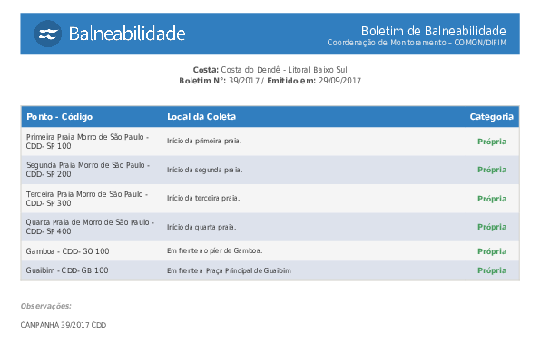
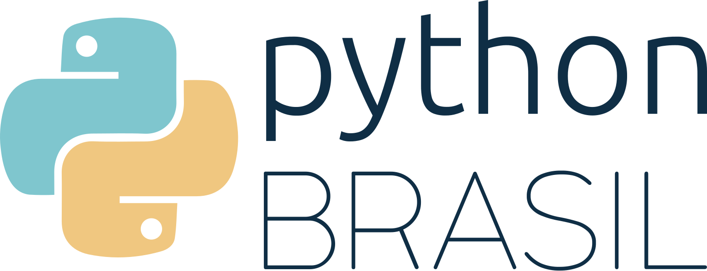

Brasil.IO: libertación de datos públicos con Python
Turicas aka Álvaro Justen
PyCon Colombia 2019
09 de febrero de 2019 - Bogotá, Colombia
$ whoami
🇧🇷 Turicas, mucho gusto =)
¡Síganme los buenos!
{twitter,
github,
youtube,
slideshare,
instagram,
telegram}
/turicas
turicas@brasil.io
Diapositivas en:
bit.ly/turicas-pyco2019
Software Libre & Python
(desde 2004/2005)


Conferencias que organizé
+ Conferencias
(sí, es Guido van Rossum)
|
brasil.io |
|
|
impacto.jor.br |
br.okfn.org |
✈️ ☕🌱👀 = 💖

Datos Abiertos
“ Son datos que pueden ser utilizados, reutilizados y redistribuidos libremente por cualquier persona, y que se encuentran sujetos, cuando más, al requerimiento de atribución y de compartirse de la misma manera en que aparecen. ”-- OpenData Handbook
Más detalles:
Control Social: Ejemplo
Operação Serenata de Amor

serenata.ai
Data pipeline

schoolofdata.org/methodology
Ni siempre están disponibles

Mayor parte del trabajo con datos abiertos

Obtener, verificar, limpiar


“ Restringir acesso a dados públicos é elitizar a democracia. ”-- Manifesto Brasil.IO

twitter.com/turicas/status/943176715672711168

twitter.com/turicas/status/959120200976224262
Cómo?
pip install rows

github/turicas/rows
Versión 0.4.0 lanzada hoy!
Ejempo: Tablas en CSV
import rows
(codificación en vivo)
Ejempo: Tablas en HTML

(codificación en vivo)
Ejempo: Tablas en PDF
(codificación en vivo)
rows convert arquivo.pdf arquivo.csv

Brasil.IO
Datos públicos brasileños accesibles

github/turicas/brasil.io
brasil.io/api/datasets


generonumero.media

Vea la edición "Mulheres na Política"

Vea la edición "Mulheres na Política II"

Leia a matéria

Vea la edición "Espaço Público"
Calle: Sustantivo (aún) Masculino

youtu.be/7yQ8U2tFFq4

apublica.org

Acceda a la materia

correio24horas.com.br

Acceda a la materia

theintercept.com/brasil

Acceda a la materia

Acceda a la materia

Acceda a la materia

Acceda a la materia

eleicoes.poder360.com.br

perfilpolitico.serenata.ai
transparenciapartidaria.org
Contribuyentes

15a Conferencia de Python en Brasil
pythonbrasil.com.br
Octubre de 2019, Ribeirão Preto - São Paulo